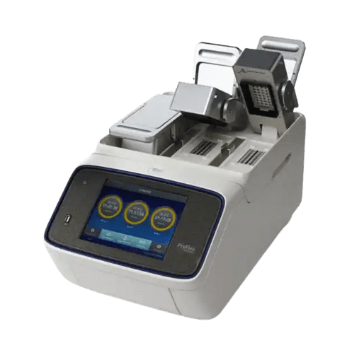
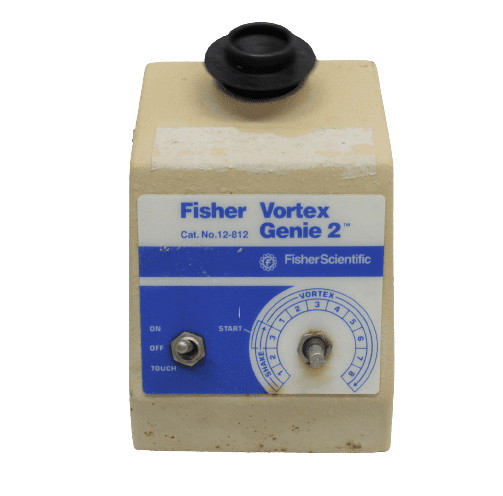
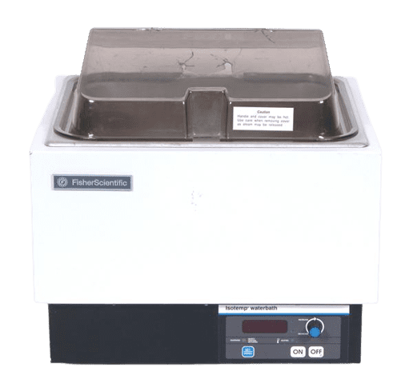
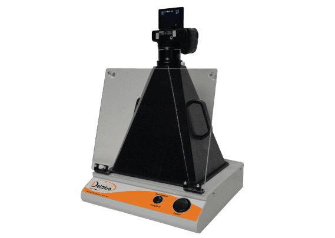
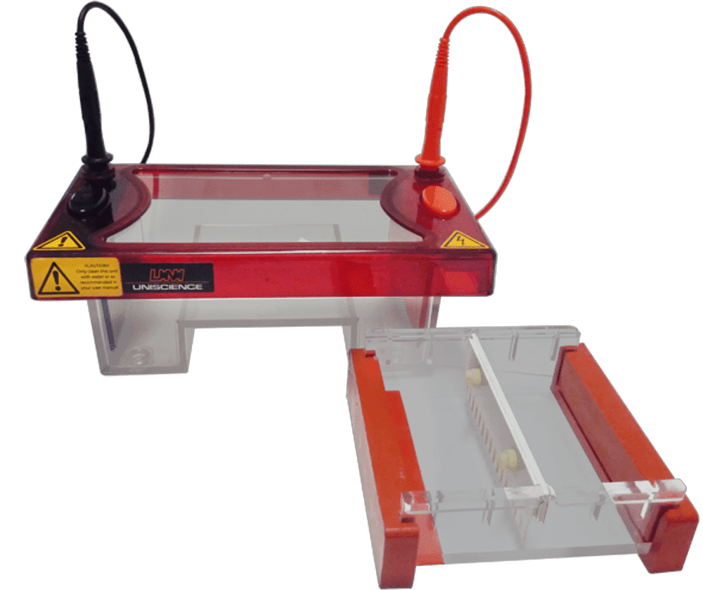

3 Equipamentos
3.1 Centrífugas
A centrífuga é um aparelho que possui a finalidade de separar substâncias que possuem densidades diferentes em uma mistura via decantação. É utilizada em etapas da extração de DNA e durante o processo de purificação das amostras. O tempo e a rotação por minuto (rpm) podem ser ajustados de acordo com a necessidade do pesquisador. É importante lembrar de sempre balancear os tubos dentro da centrífuga antes da sua utilização, ou seja, dispor os tubos de uma forma que haja o balanceamento dos pesos para não descalibrar o aparelho (ver imagem fixada na parede para auxiliar nesse processo ou em caso de número de tubos ímpar colocar um tubo extra com a mesma quantidade dos demais tubos). No Nupgen temos dois modelos de centrífugas:
Centrífuga Eppendorf 5424
Nessa centrífuga cabe 24 microtubos de 1,5 mL. Não é refrigerada.
Centrífuga MRC SCEN-206 6000 rpm *confirmar marca/modelo*
Nessa centrífuga cabe 18 microtubos de 1,5 mL. Não é refrigerada.
3.2 Termocicladores
O termociclador é um equipamento que automatiza o processo de amplificação de uma sequência específica de DNA a partir de uma pequena amostra. Possui um bloco térmico com orifícios onde tubos de 0,2 mL com as amostras e reagentes são inseridos. O termociclador eleva e reduz a temperatura do bloco em ciclos de tempo pré-programados, permitindo a multiplicação em massa de moléculas de DNA com a ajuda da enzima Taq DNA polimerase e de primers atingindo grandes quantidades de DNA após alguns ciclos do processo. No Nupgen temos dois modelos de termocicladores:
Termociclador Eppendorf Mastercycler® nexus *confirmar modelo*
Nesse modelo é possível fazer apenas uma reação de PCR por vez, embora tenha uma grande quantidade de poços (96 poços). É utilizado geralmente quando o número de amostras a serem amplificadas ultrapassa 32, que é o limite do outro modelo de termociclador disponível para utilização.

Termiciclador Applied Biosystems® ProFlex™ 3 x 32-well PCR System
O sistema ProFlex™ 3 x 32-Well PCR permite executar três experimentos de uma só vez em cada um dos blocos. Dessa maneira, é possível realizar três PCR diferentes e independentes. No entanto, o número máximo de amostras em cada bloco é 32. Todos os programas utilizados pelos alunos do laboratório estão salvos nesse aparelho.

3.3 Balança Eletrônica Semi-Analítica 320g BL320H
A balança é um instrumento que mede a massa de um corpo. É utilizada para pesar reagentes do laboratório que estão em pó, como a agarose.

Há uma balança no laboratório do Bloco G90 e uma no laboratório do Bloco G80.
3.4 Vórtex FisherScientific Genie 2
O agitador vórtex é utilizado para duas funções: agitar e homogeneizar uma determinada solução líquida, contida em pequenos tubos, como os tubos tipo eppendorf. Esse aparelho é composto por um motor que gera movimento em um receptáculo feito em borracha sintética. Nesse receptáculo é colocado os tubos com as substâncias que serão submetidas à agitação. O movimento que é produzido cria um vórtice no líquido submetido ao aparelho. Pode ser configurado para funcionar de forma periódica ou contínua, ativado conforme a pressão do recipiente.

Há um vórtex no laboratório do Bloco G90 e um no laboratório do Bloco G80.
3.5 Banho maria
O banho maria é um equipamento que permite a termorregulação de uma amostra, por meio do controle da temperatura de um fluido térmico (água), o qual é colocado dentro da cuba do banho e que irá transferir a temperatura ajustada no banho para a amostra imersa nele. É utilizado em etapas que necessitem do aquecimento das amostras, como durante a extração de DNA e na purificação das amostras após a PCR. Dependendo do procedimento a ser realizado, uma temperatura ideal deverá ser programada no banho-maria. No Nupgen há dois modelos de banho maria disponíveis:
Banho maria digital SolidSteel
Banho maria FisherScientific Isotemp *confirmar marca/modelo/foto*

3.6 Transiluminadores
Serve para visualizar o resultado após eletroforese em gel de agarose utilizando um corante específico para o tipo de luz (LED ou UV). Há dois tipos de transiluminadores no Nupgen:
Transiluminador de luz LED Kasvi
O transiluminador LED é um equipamento leve e com design moderno, além de ser uma inovação na área de eletroforese. Ao contrário dos transiluminadores tradicionais com luz UV, a iluminação de LED não causa deterioração da amostra e não é nociva ao usuário. Acompanha câmara escura que permite documentar e arquivar rapidamente imagens dos géis através de câmeras fotográficas comuns, inclusive câmeras de telefones celulares. Para visualizar o gel nesse aparelho é necessário utilizar o corante Safer, específico para esse tipo de luz.
Transiluminador de luz UV
Para visualizar o gel nesse aparelho é necessário utilizar o corante GelRed, específico para esse tipo de luz. Coloca-se uma câmara escura sobre o aparelho para possibilitar o registro fotográfico, além de proteger da luz UV que é emitida, visto que é nociva para a saúde humana. Portanto, não deve-se olhar o gel com a luz ligada sem as devidas proteções.

3.7 Microondas
O microondas é utilizado para aquecer soluções, principalmente no preparo do gel de agarose, visto que é necessário o aquecimento para completa homogeneização. Quando o gel é reutilizado, também é derretido no microondas antes de ser despejado na cuba.
Há um microondas no laboratório do Bloco G90 e um no laboratório do Bloco G80.
3.8 Cuba de eletroforese horizontal
A cuba de eletroforese é utilizada na separação de proteínas e ácidos nucleicos, assim como nas análises de fragmentos amplificados por meio da PCR.

Há uma cuba no laboratório do Bloco G90 e uma no laboratório do Bloco G80.
3.9 Fonte para eletroforese
A fonte é utilizada para ligar os cabos de energia à cuba de eletroforese e fornecer energia elétrica para a corrida do gel. É adequada de acordo com a voltagem desejada para a corrida (por exemplo, 100V). Algumas permitem a programação do tempo também.

Há uma fonte no laboratório do Bloco G90 e uma no laboratório do Bloco G80.
3.10 Estufas
O uso mais básico de uma estufa de laboratório é para secar e esterilizar equipamentos, geralmente vidrarias. Também é utilizada para secar amostras que necessitam desse processo durante o protocolo (por exemplo, envio para o sequenciamento). As estufas usam convecção térmica para fornecer calor à câmara, o que permite manter temperaturas uniformes.
Mini estufa
A mini estufa é utilizada para secagem das amostras. Seu tamanho compacto é ideal para secar os tubos na purificação e para o envio das amostras para o sequenciamento.
*tirar foto - não achei na internet*
Essa estufa encontra-se no laboratório do Bloco G90.
Estufa grande
Essa estufa é mais utilizada na secagem de vidrarias ou outros utensílios do laboratório que necessitem, visto que seu tamanho é maior. No entanto, também pode ser utilizada para secagem de amostras quando necessário (durante a extração de DNA, por exemplo).
Essa estufa encontra-se no laboratório do Bloco G80.
3.11 Agitador magnético
O Agitador magnético é um equipamento de laboratório utilizado para realizar misturas de diversas soluções. Para que a mistura aconteça, é colocado dentro do recipiente uma pulga (barra magnética), que irá fazer a agitação do líquido enquanto o aparelho estiver ligado. O agitador funciona como um ímã que gira acoplado a um motor elétrico, mexendo consequentemente a pulga promovendo a mistura da solução. É mais utilizado no preparado de tampão TBE estoque, visto que é necessário uma boa homogeneização da solução.
Esse agitador/pulga encontra-se no laboratório do Bloco G90.